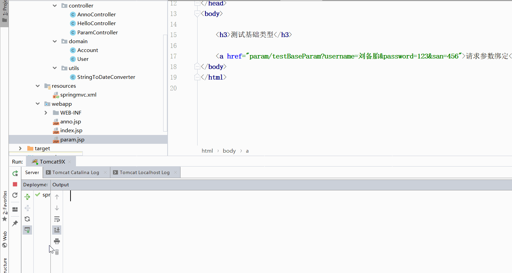
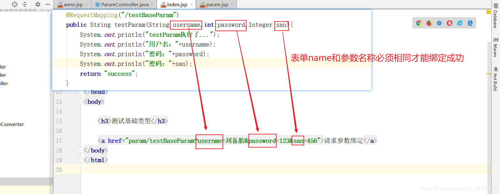
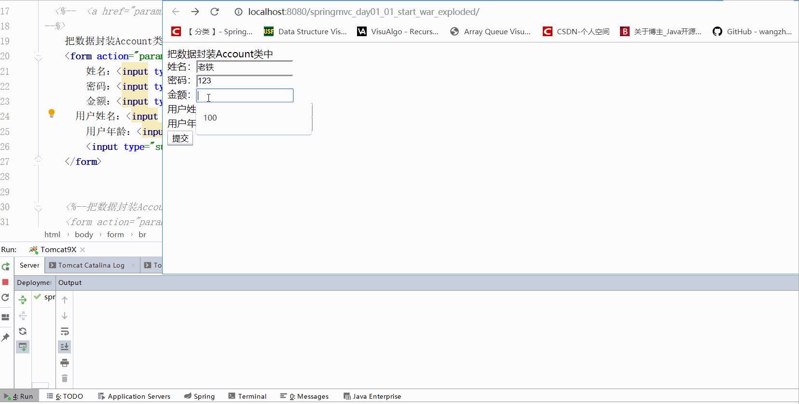
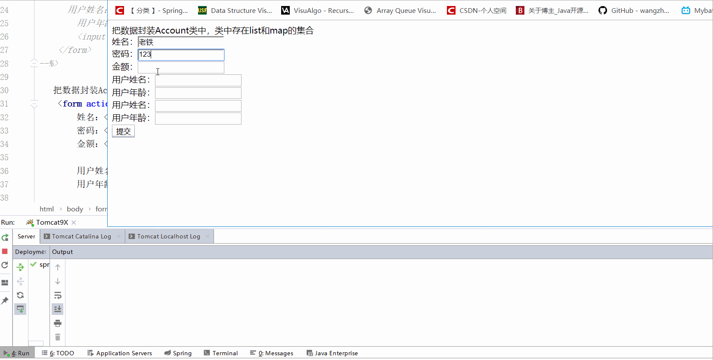
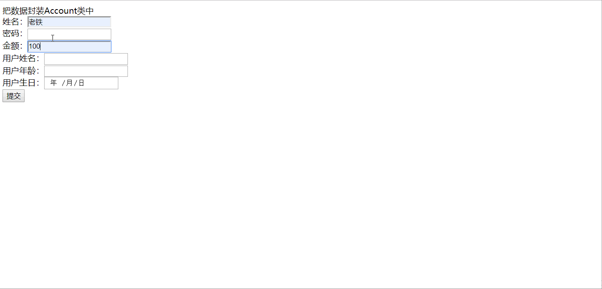
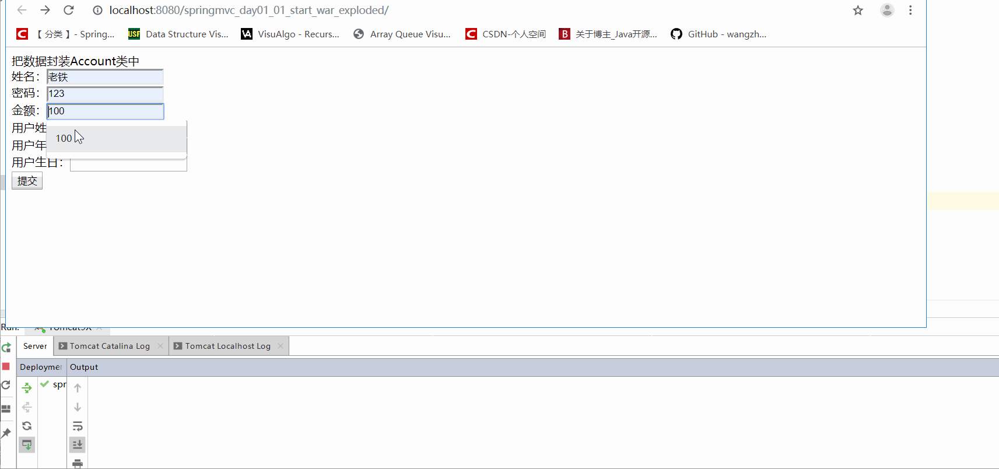
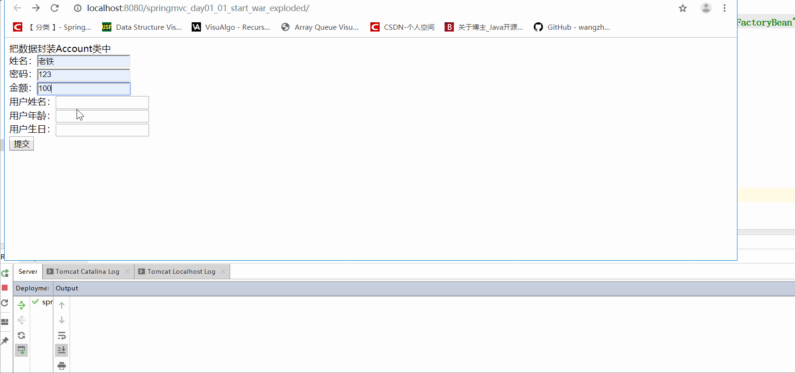
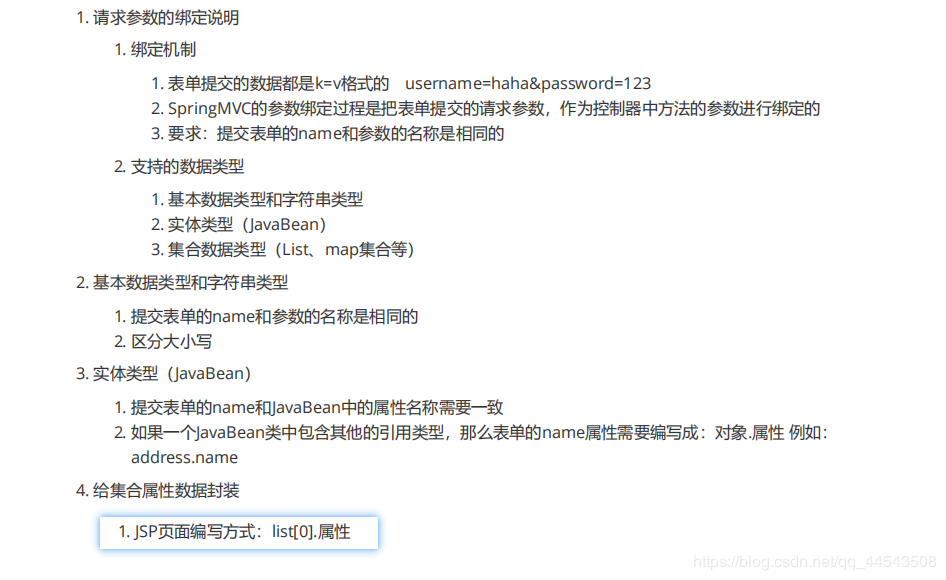

原文连接:https://www.cnblogs.com/yichunguo/p/11974573.html
目录
SpringMVC作为Controller层（等价servlet和struts中的action）专门用来处理页面的一些请求，然后将数据再通过视图返回给用户的，因此可见前后端数据参数传递相对springmvc的重要性，这篇文章将总结一下springmvc中如何接收前台页面的参数，即springmvc中的参数绑定问题。
@
1. 绑定机制
表单提交的数据都是k=v格式的，SpringMVC的参数绑定过程是把表单提交的请求参数，作为控制器中方法的参数进行绑定的，但要注意一点，提交表单的name和controller方法的参数名称是相同的
2. 支持的数据类型
springmvc中，有支持的默认类型的绑定,可见springmvc框架的强大~框架就是强~。也就是说，直接在controller方法形参上定义默认支持的类型对象，就可以使用下面这些对象。
HttpServletRequest对象
HttpServletResponse对象
HttpSession对象
Model/ModelMap对象
支持的数据类型有基本数据类型、包装类、字符串类型、实体类型（JavaBean） 、集合数据类型（List、map集合等），那么下面就来具体分析分析。
2.1、基本数据类型、字符串
其实下面测试类我已经包括基本数据类型、包装类、字符串类型了！
controller测试代码
@Controller
@RequestMapping("/param")
public class ParamController {
@RequestMapping("/testBaseParam")
public String testParam(String username,int password,Integer san){
System.out.println("testParam执行了...");
System.out.println("用户名："+username);
System.out.println("密码："+password);
System.out.println("密码："+san);
return "success";
}index.jsp测试代码
<%@ page contentType="text/html;charset=UTF-8" language="java" %>
<html>
<head>
<title>Title</title>
</head>
<body>
<h3>测试基础类型</h3>
<a href="param/testBaseParam?username=刘备胎&password=123&san=456">请求参数绑定</a>
</body>
</html>
运行效果

再次强调，注意提交表单的name和参数的名称必须相同，否则绑定失败

基本数据类型、包装类、字符串类型总结：1、提交表单的name和参数的名称必须相同。2、严格区分大小写
2.2、实体类型（JavaBean）
第一种情况：正常实体类
dao测试代码
//实现可序列化接口
public class Account implements Serializable{
//Account数据库字段
private String username;
private String password;
private Double money;
...省去getset方法和toString方法controller测试代码
//请求参数绑定把数据封装到JavaBean的类中
@RequestMapping("/saveAccount")
public String saveAccount(Account account){
System.out.println("saveAccount执行了...");
System.out.println(account);
return "success";
}这里用index.jsp转发到了param.jsp，代码如下：
<jsp:forward page="param.jsp"></jsp:forward>param.jsp测试代码如下：
<%@ page contentType="text/html;charset=UTF-8" language="java" %>
<html>
<head>
<title>Title</title>
</head>
<body>
把数据封装Account类中
<form action="param/saveAccount" method="post">
姓名：<input type="text" name="username" /><br/>
密码：<input type="text" name="password" /><br/>
金额：<input type="text" name="money" /><br/>
<input type="submit" value="提交" />
</form>
</body>
</html>
测试效果

第一种情况总结：注意提交表单的name和参数的名称必须相同，否则绑定失败~强调n次了~
第二种情况：实体类包含对象属性
dao测试代码，注意Account实体类中包含User对象属性
//实现可序列化接口
public class Account implements Serializable{
//Account数据库字段
private String username;
private String password;
private Double money;
//User对象属性
private User user;
...省去getset方法和toString方法User实体类代码
//实现可序列化接口
public class User implements Serializable{
private String uname;
private Integer age;
private Date date;
...省去getset方法和toString方法controller测试代码没变，所以就不贴出来了。
param.jsp测试代码如下：
<%@ page contentType="text/html;charset=UTF-8" language="java" %>
<html>
<head>
<title>Title</title>
</head>
<body>
把数据封装Account类中
<form action="param/saveAccount" method="post">
姓名：<input type="text" name="username" /><br/>
密码：<input type="text" name="password" /><br/>
金额：<input type="text" name="money" /><br/>
用户姓名：<input type="text" name="user.uname" /><br/>
用户年龄：<input type="text" name="user.age" /><br/>
<input type="submit" value="提交" />
</form>
</body>
</html>
测试效果

细心的同学可能发现了，date属性为null，因为我没有在jsp中给date传值所以为null。
第二种情况总结:实体类包含对象属性这种情况，前后端传参jsp格式：实体对象.对应实体类属性字段
2.3、集合数据类型（List、map集合等）
dao测试类代码：
//实现可序列化接口
public class Account implements Serializable{
//Account数据库字段
private String username;
private String password;
private Double money;
//集合对象属性
private List<User> list;
private Map<String,User> map;
...省去getset方法和toString方法controller测试代码
//请求参数绑定把数据封装到带集合类型的JavaBean的类中
@RequestMapping("/saveAccount")
public String saveAccount(Account account){
System.out.println("saveAccount执行了...");
System.out.println(account);
return "success";
}param.jsp测试代码如下：
<%@ page contentType="text/html;charset=UTF-8" language="java" %>
<html>
<head>
<title>Title</title>
</head>
<body>
把数据封装Account类中，类中存在list和map的集合
<form action="param/saveAccount" method="post">
姓名：<input type="text" name="username" /><br/>
密码：<input type="text" name="password" /><br/>
金额：<input type="text" name="money" /><br/>
用户姓名：<input type="text" name="list[0].uname" /><br/>
用户年龄：<input type="text" name="list[0].age" /><br/>
用户姓名：<input type="text" name="map['one'].uname" /><br/>
用户年龄：<input type="text" name="map['one'].age" /><br/>
<input type="submit" value="提交" />
</form>
</body>
</html>
测试效果

总结：集合类型jsp格式：list[0].属性
3. 参数请求中文乱码解决
经过上面测试，有的同学可能会出现中文乱码问题，这是很正常的，因为我们没有设置类似request.setCharacterEncoding("UTF-8") 操作，为了防止中文乱码解决，我们可以统一设置全局编码过滤器。
在web.xml中配置Spring提供的过滤器类
<!--配置解决中文乱码的过滤器-->
<filter>
<filter-name>characterEncodingFilter</filter-name>
<filter-class>org.springframework.web.filter.CharacterEncodingFilter</filter-class>
<init-param>
<param-name>encoding</param-name>
<param-value>UTF-8</param-value>
</init-param>
</filter>
<filter-mapping>
<filter-name>characterEncodingFilter</filter-name>
<url-pattern>/*</url-pattern>
</filter-mapping>4.自定义类型转换器
既然springmvc强大到提供默认支持很多类型，但是还是存在瑕疵，例如我们在保存date日期类型的数据时，springmvc只支持2019/9/18 该种格式，如果换成2019-8-18 则将报错，那我也不能光说不做鸭，下面我就再来踩一次坑，让大家LookLook，这里会报The server cannot or will not process the request due to something that is perceived to be a client error异常，不过没事，我也写了专门决绝该异常的一篇文章，点击进入，不扯了，开始测试
jsp关键代码
用户生日：<input type="date" name="user.date" /><br/>报错效果：

为了跟有力的证明我刚说的springmvc只支持2019/9/18 该种格式，如果换成2019-8-18 则将报错，那么我就把jsp关键代码更改了一下，把type=date改成了type=text，如下
用户生日：<input type="text" name="user.date" /><br/>效果如下

我们想想，表单提交的任何数据类型全部都是字符串类型，但是后台定义Integer类型，数据也可以封装上，说明Spring框架内部会默认进行数据类型转换。如果想自定义数据类型转换，该怎么实现呢？
4.1创建一个普通类实现Converter接口
1、创建一个普通类实现Converter接口，并添加相应格式转换方法，代码如下
import org.springframework.core.convert.converter.Converter;
import java.text.DateFormat;
import java.text.SimpleDateFormat;
import java.util.Date;
/**
* 把字符串转换日期
*/
public class StringToDateConverter implements Converter<String,Date>{
/**
* String 传入进来字符串
*/
public Date convert(String source) {
// 判断
if(source == null){
throw new RuntimeException("请您传入数据呐");
}
DateFormat df = new SimpleDateFormat("yyyy-MM-dd");
try {
// 把字符串转换日期
return df.parse(source);
} catch (Exception e) {
throw new RuntimeException("完蛋~数据类型转换出现错误");
}
}
}
4.2Springmvc.xml中配置自定义类型转换器
- 注册自定义类型转换器，在springmvc.xml配置文件中编写配置
<!--配置自定义类型转换器-->
<bean id="conversionService" class="org.springframework.context.support.ConversionServiceFactoryBean">
<property name="converters">
<set>
<bean class="com.gx.utils.StringToDateConverter"/>
</set>
</property>
</bean>
<!-- 开启SpringMVC框架注解的支持 -->
<mvc:annotation-driven conversion-service="conversionService"/>效果如下：

自定义类型转换器步骤总结：
1、创建一个普通类实现Converter接口，并添加相应格式转换方法
2、注册自定义类型转换器，在springmvc.xml配置文件中编写配置
千万别忘了配置之后要在注解驱动中注册，也就是这一句
<mvc:annotation-driven conversion-service="conversionService"/>5、最后参数绑定学习小结

如果本文对你有一点点帮助，那么请点个赞呗，谢谢~
最后，若有不足或者不正之处，欢迎指正批评，感激不尽！如果有疑问欢迎留言，绝对第一时间回复！
欢迎各位关注我的公众号，一起探讨技术，向往技术，追求技术，说好了来了就是盆友喔...